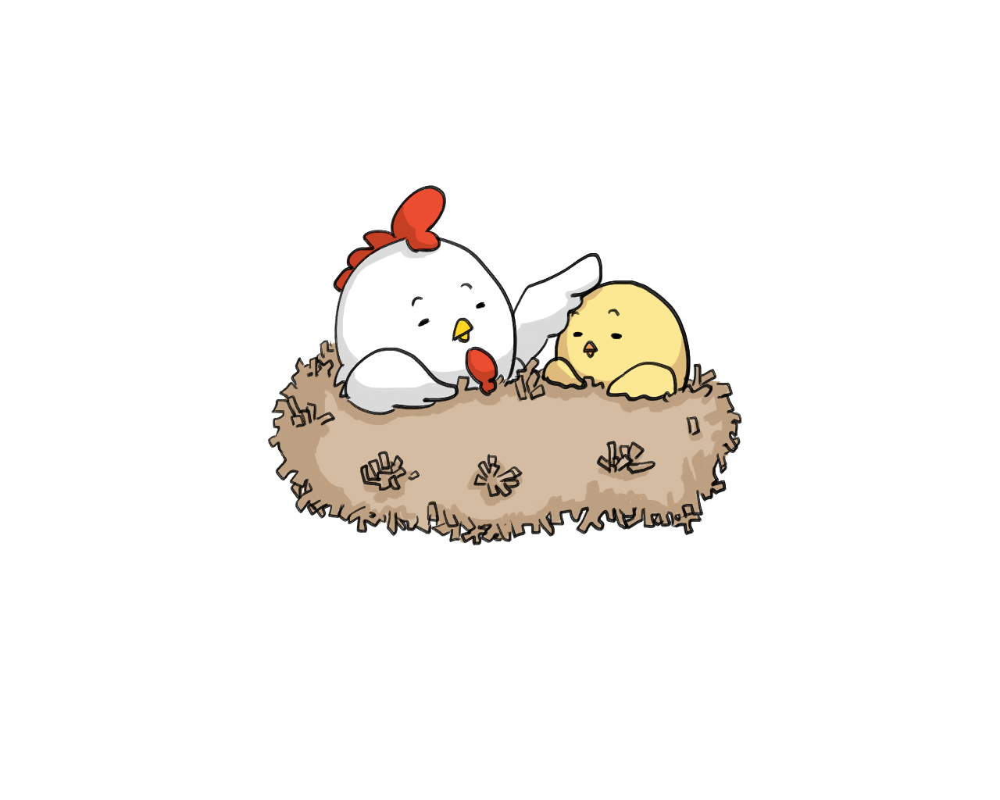
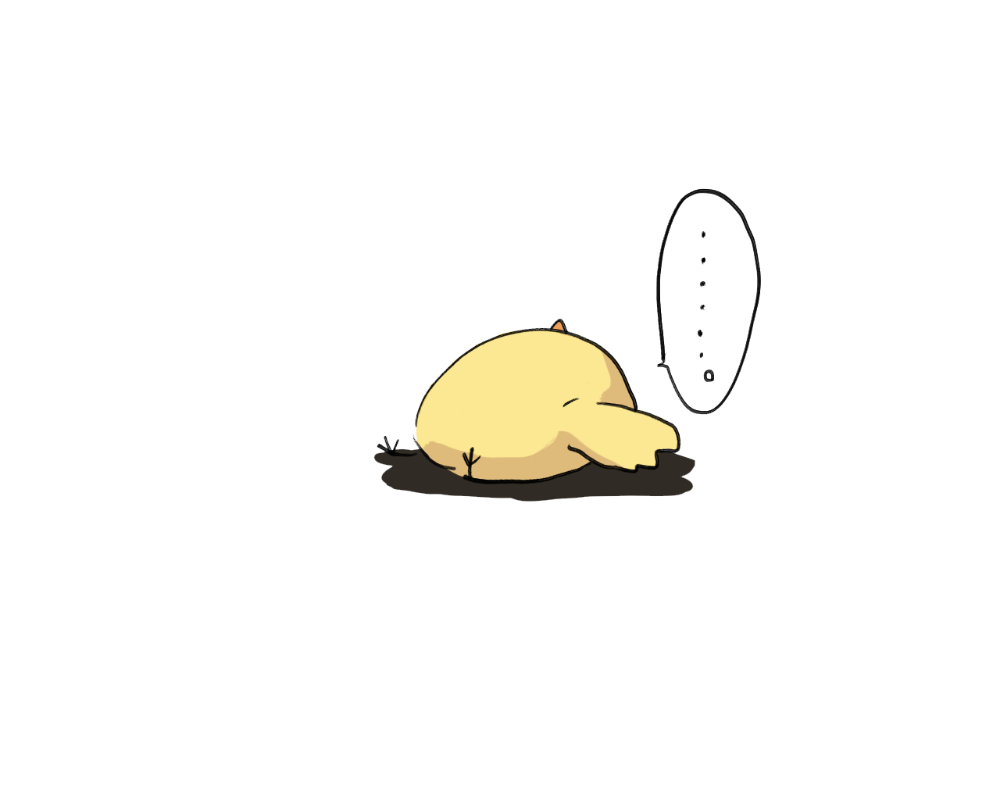
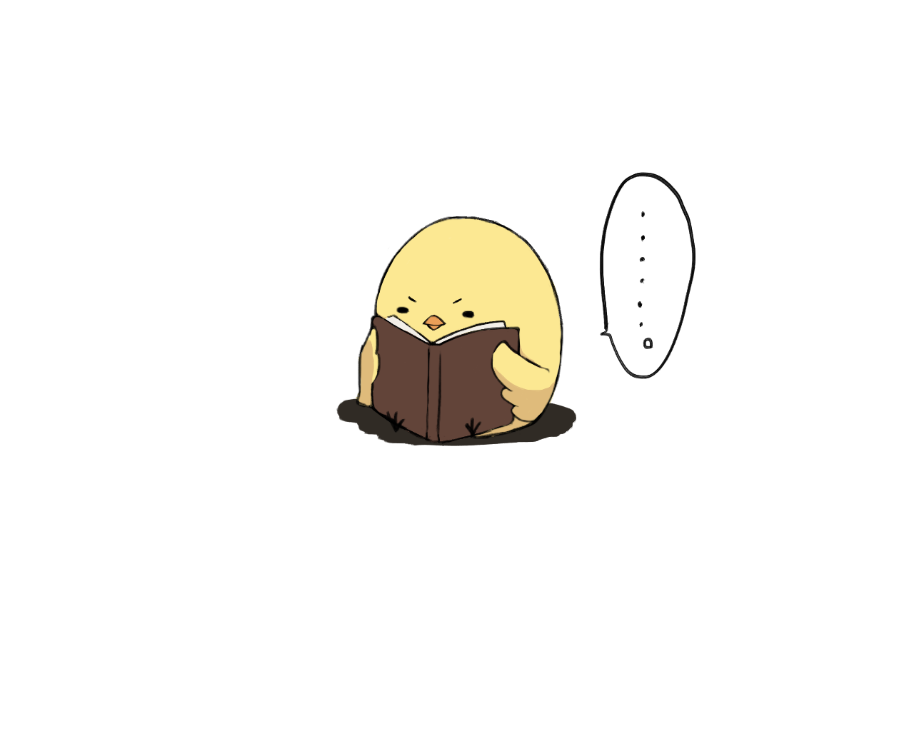
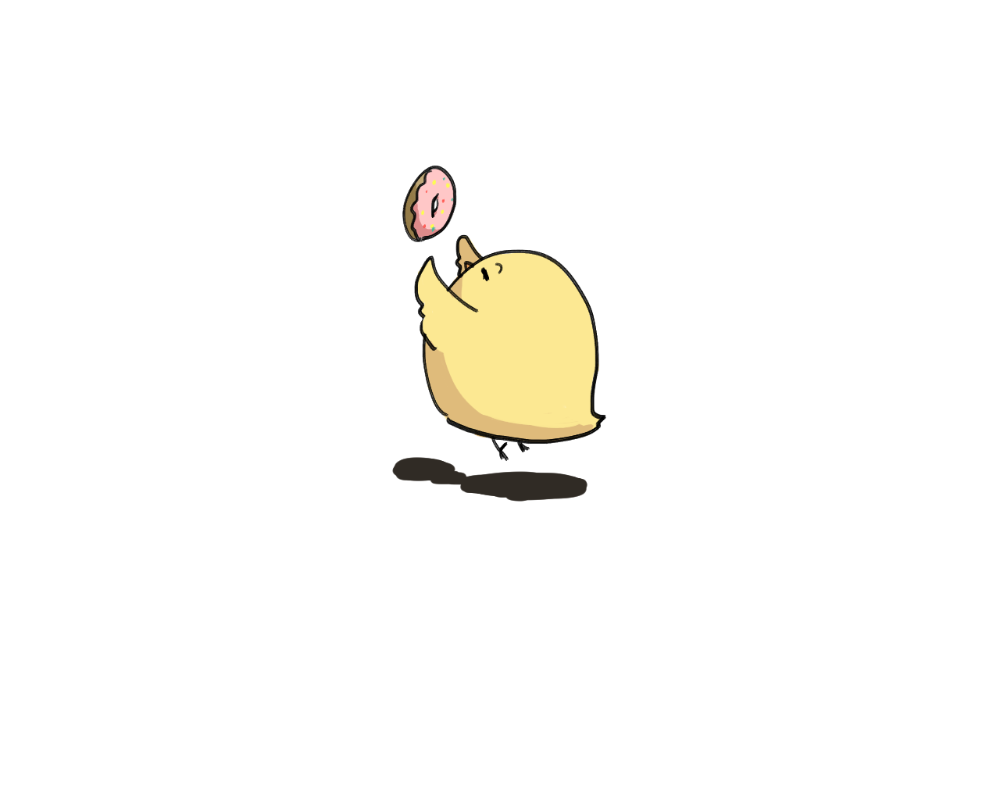
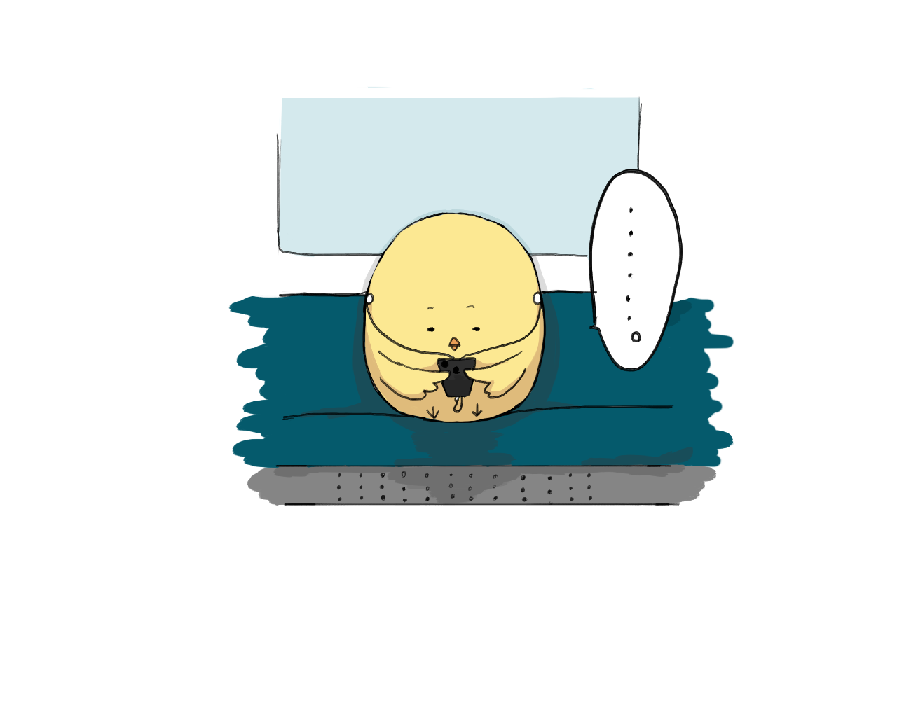
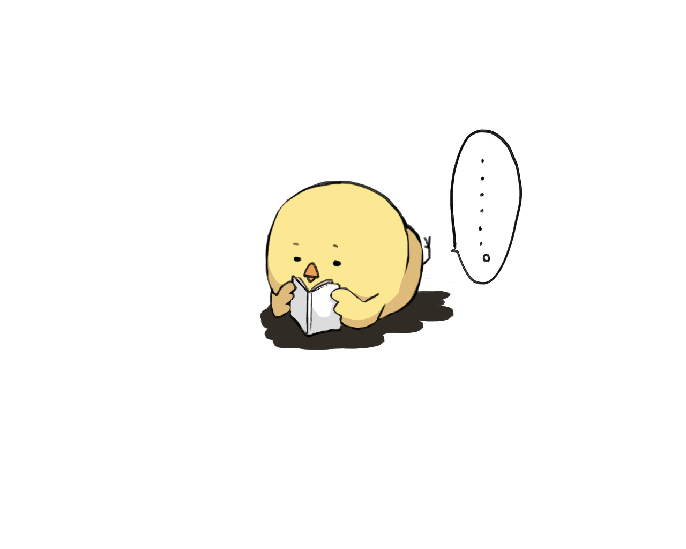
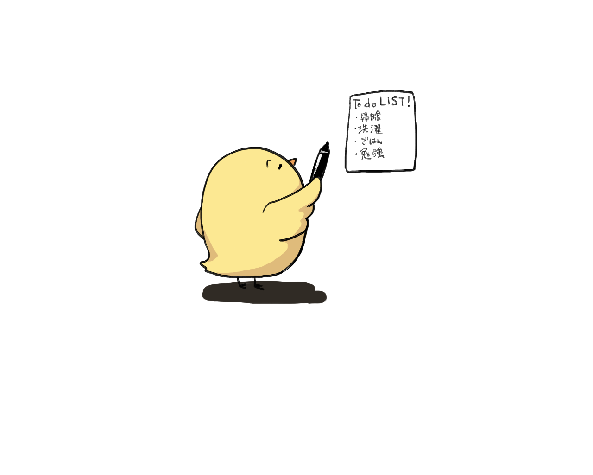
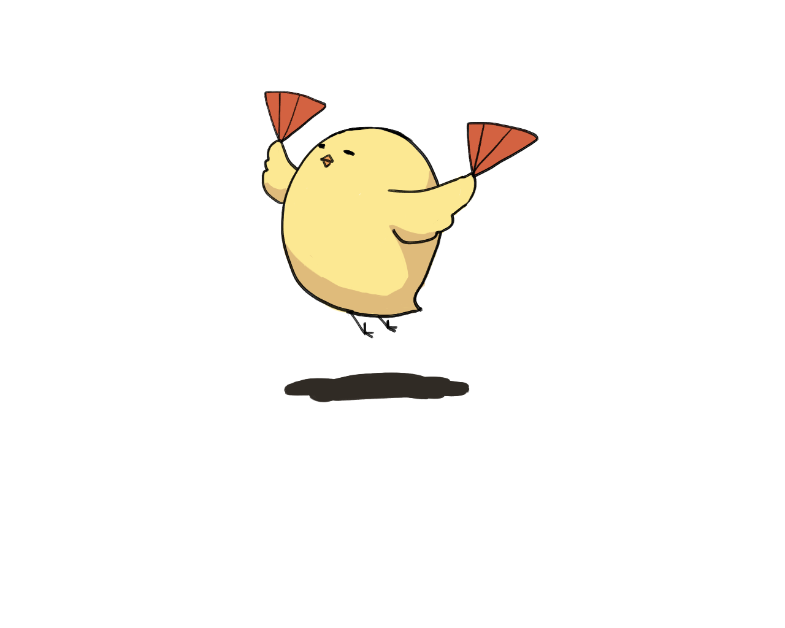
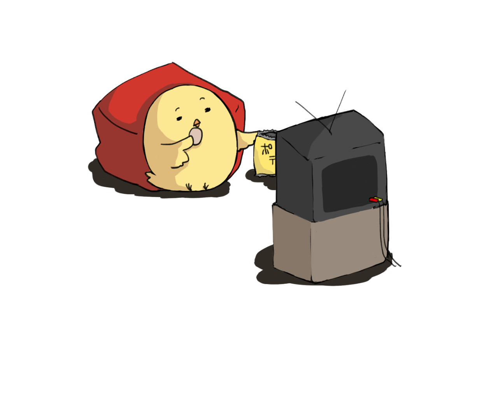
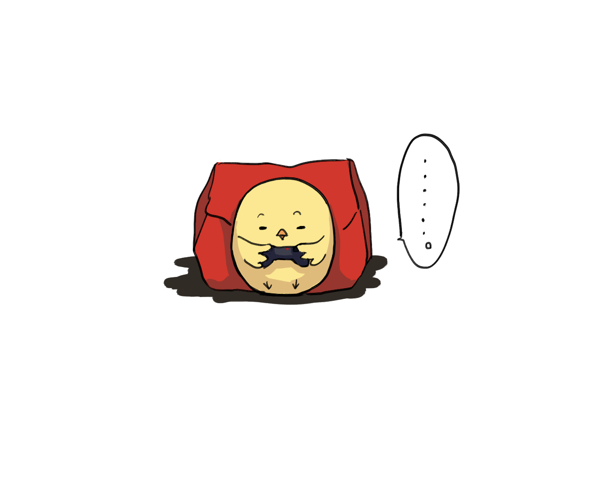

Day1
家族とのコミュニケーション
オフライン生活1日目は近所に家族と買い物へ。
普段から家族と話さないわけではないが、近頃はスマートフォンを手にしてから触りながら歩くことが増えていたようだ。オフラインにすることによって買い物中に普段より家族と会話していた。
オンラインを使用している時間を家族とのコミュニケーションに当てることができたのだ。

毎日のように何気なく触れていたオンラインの時間はいつの間にか家族とのコミュニケーションの時間を奪っていた。これからも出かける時くらいは家族といえどオフラインにして家族同士で会話する時間を増やしていくことは大切なことだと気づいた。
Day2
何もしないということ
普段から液晶画面を眺める私たちにはぼーっとする時間も必要なのかもしれない。
昼寝をしてそのまましばらく眠気の余韻に浸っていた。下校する近所の中学校の生徒声、部活動の元気な声が聞こえてきた。最近はイヤフォンをして音楽を聴くばかりで周囲の音に耳を傾けていなかった。色々な会話が聞こえてきて昔を思い出し、久々に中学時代の友人に会いたくなった。

今は気軽に音楽を聞くことができるため、イヤフォンをしていることが増えていたが、たまには自然の音や周囲の音に耳を傾けてぼーっと過ごす時間は気持ちを落ち着かせることができるようだ。
Day3
短い時間の使い方
バイトの休憩時間、ほとんどの人がスマートフォンを使って時間を過ごすだろう。私も普段はそうしている。しかしちょうど疲れていたので少し寝てみることにした。そうすることによって目を休めることができてすこし視界がクリアになった。アプリで時間を潰すのも楽しいが、少し休めることも大切だと改めて感じた。そのまま帰宅してからもスマートフォンにあまり触れずに寝ることにした。

今までは疲れていてもゲームしたい気持ちが多くて休憩時間にアプリを起動することが多かったが、他に過ごし方はあるし、画面を見ないほうが疲れない時もある。しかし寝すぎてしまうこともあるかもしれない。次回からは休憩時間に本を読んで過ごすのも良いかもしれない。
Day4
喜びの共有
今日は発売日より前に予約をしていたCDがやっと届いたのだ。家に一人だったため、待ちわびていた感動をSNSで共有しこの喜びをなおさら聞いて欲しかった。呟くのを我慢し、届いたCDを丁寧に開封していった。本当に楽しみにしていたものだったうえにデザインが本当にかっこく、その日はひたすら一人で感動を噛み締めていた。

Twitterは国内のユーザー数だけでも4500万人おり、常に誰かが見ている。いいねを押してくれる人がいる、その時の感動を自分だけにとどめるのではなく呟くことによって昇華されていく。改めてSNSの良さを実感した。
Day5
生活に馴染んだ連絡手段
友人と別れたあと、LINEで「今日はありがとう」と感想など送ることが多々あるため、それを送れないことに少し寂しさを感じた。
今日はさらに泊まりにいくため電車で待ち合わせ場所で落合わなければならなかった。待ち合わせ場所は泊まる所の最寄り駅だ。しかし事前に時間も場所もちゃんと決めてあったため、LINEを確認せずとも駅構内で会うことができた。

普段から待ち合わせは、「今どこにいる？」「あと◯◯分で着く」というように常にLINEを活用して連絡を取りながら待ち合わせに向かうことが多いが、あらかじめ全員が理解しておけば、当日会う時スマートフォンの画面を見る必要はないのだ。簡単に連絡を取れるが故、しっかり事前に確認を行うことが少なくなっているように感じた。
Day6
その時を楽しむということ
久しぶりに会えて会話を楽しんだから携帯を使うこともなかった。翌日は学校ということで早めに 解散。帰りの電車は乗り換え案内を見ず。自分の記憶と電子案内板を見て帰ることができた。
家に着いてからは弟と一緒にテレビを見て、その後借りていた漫画を読んだ。無心で読みふけってしまったため時間があっという間に過ぎていた。

常にスマートフォンをいじっていたが、オフラインにすることで友人と過ごす時間、漫画を読む時間も普段より充実した時間を過ごすことができた。オフラインを意識して生活するようにしていると、スマートフォンをいつどんな時でも使用していたのだと見つめ直すことができた。
Day7
その日の目標
今日は時間があったがすることを決めていない、親に録画残量が足りないと叱られるた め溜めていた番組をみて消すことにした。リアルタイムでやっている番組は呟きたくな るが、時間が経った後の番組はあまりそうは思わないものだ。
連日で外出していた疲れが今日にきたようで、ぼーっとする時間が特に多かった、気づいたら時間が過ぎていた。

暇な時間があればにスマートフォンをいじることばかりだったが、1日の計画やその日にすることを決めておけばただぼーっとするだけのもったいない時間というのが生まれない。そして有意義な1日を過ごすことができるのではないかと考える。
Day8
暇あればスマホ
今日は基本的にぼーっとした時間を過ごした。今までは暇さえあればスマートフォンをいじって いたのだが、8日目にしてオフラインの時間帯があることにだいぶ慣れてきた。
暇な時間には思わずスマートフォンを触ってしまう、というのが癖になっているし、アプリも面白いものが増えてついついやり込んでしまっていたのだが、オフラインに設定した時間帯は自然に触るのをやめている。調べ物したい時があっても、とりあえずメモをしてあとで調べるようにした。

決めた時間帯には前半よりスマートフォンを触ることが少なくなった、習慣にすると慣れてくるもので、今までどれほどスマートフォンに触れていたのか改めて実感することができた。
Day9
スマートフォンの操作時間
今日は録画したまますっかり見忘れていた映画をみることにした。映画を見る時にはスマホを持たずお菓子を手にしてゆっくりと映画を楽しむことができてとても有意義な時間になった。

見れていなかったこの映画、スマートフォンを見てる時間を省くだけで映画1本分を見れてしまうことがわかった。今までどれほどスマートフォンの画面を見る時間に費やしたのだろう。
Day10
便利な情報サイト
最終日の今日は最近できていなかったテレビゲームをすることにした。普段は携帯で攻略サイトを見ながらサクサク進めているが、オフラインの時間帯に行うため見ないで進めた。しかしこのゲームは既に1週目をクリアしていて今日は2週目、記憶を頼りに物語を進めていった。サイトを見ながら進めていたため、記憶がしっかり残っているか不安だったが1週目に何度もエリアを回っていたため案外覚えているものだった。

発売されたばかりのゲームでなければ、攻略サイトという便利なものができているから進めたい一心で攻略サイトを見ていたが、自分で発見する楽しさが、サイトを見ないほうが大きいと感じた。しかし、のちに攻略サイトを見た時取り忘れたアイテムがあるとものすごく悲しくなる。やはり攻略サイトはとても便利だ。